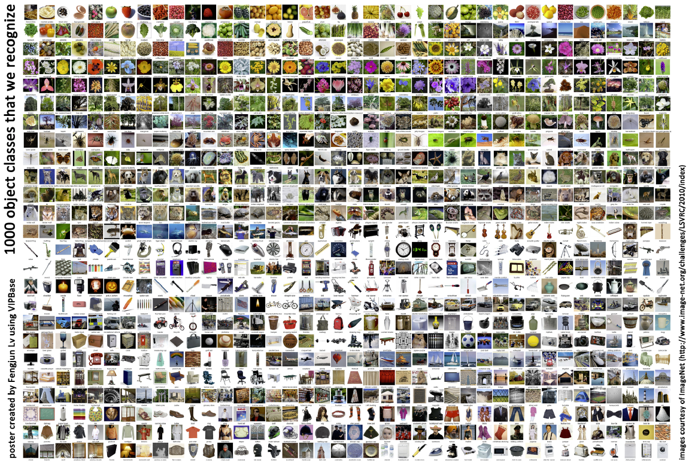
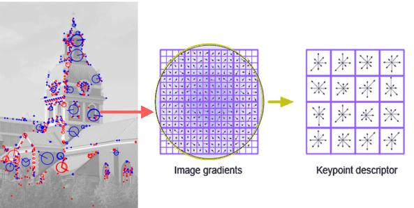
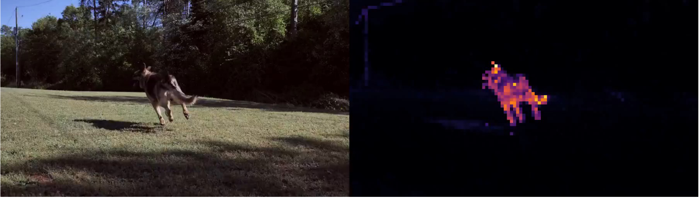

DEEP LEARNING & COMPUTER VISION
深度学习与计算机视觉
王兴刚 · 华中科技大学 · AI-native 幻灯片（
←
→
翻页 ·
O
总览 ·
F
全屏）
LECTURE 01
深度学习与计算机视觉简介
59 页 · 学科定位 / 视觉简史 / 问题定义与评估

LECTURE 02
从 AlexNet 到 ChatGPT
92 页 · 训练过程 / CNN 与注意力 / 大模型机制与边界

LECTURE 03A
从浅层到深度：特征表征之路
47 页 · 手工与浅层特征 / 深度表征 / 迁移与半监督

LECTURE 03B
自监督时代的表征学习
52 页 · 对比学习 / 掩码建模与 JEPA / 拓展：INR 与 3D